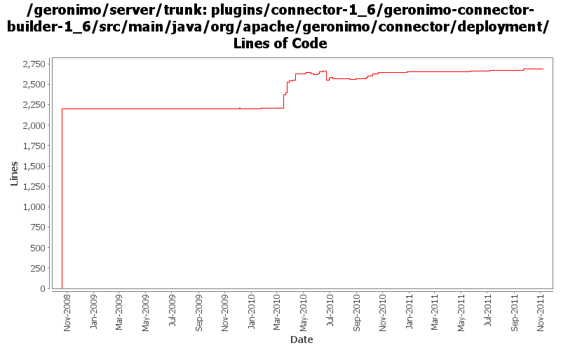

[root]/plugins/connector-1_6/geronimo-connector-builder-1_6/src/main/java/org/apache/geronimo/connector/deployment
 dconfigbean
(12 files, 1647 lines)
dconfigbean
(12 files, 1647 lines)
 jsr88
(13 files, 2034 lines)
jsr88
(13 files, 2034 lines)

| Author | Changes | Lines of Code | Lines per Change |
|---|---|---|---|
| Totals | 100 (100.0%) | 4156 (100.0%) | 41.5 |
| djencks | 59 (59.0%) | 3543 (85.3%) | 60.0 |
| gawor | 17 (17.0%) | 378 (9.1%) | 22.2 |
| xuhaihong | 13 (13.0%) | 147 (3.5%) | 11.3 |
| rickmcguire | 4 (4.0%) | 66 (1.6%) | 16.5 |
| genspring | 6 (6.0%) | 17 (0.4%) | 2.8 |
| rwonly | 1 (1.0%) | 5 (0.1%) | 5.0 |
merge in rev 1197190, Ensure AdminObjectRefBuilder executes before ResourceRefBuilder so that resource-env-ref via @Resource annotation has been handled before ResourceRefBuilder handle that @Resource as resource-ref. (thanks Shawn!)
5 lines of code changed in 1 file:
GERONIMO-6169 Recursive lookup while the default comp entry is configured
18 lines of code changed in 1 file:
Update codes due to getInjectionTargets return value type changed to Set
7 lines of code changed in 2 files:
GERONIMO-6058 Replace StringBuffer usage with StringBuilder
2 lines of code changed in 2 files:
GERONIMO-6045 Support artifact alias for ResourceReference and JndiReference
15 lines of code changed in 2 files:
GERONIMO-6022 Support use the @Resource(name="java:global/env/abc") for environment entry injection
36 lines of code changed in 2 files:
ManagedBean injection should consider the field type.
3 lines of code changed in 1 file:
re-enable the message-destination handling logic for spec and vendor DD.
4 lines of code changed in 1 file:
NPE protection for resource type.
6 lines of code changed in 1 file:
Revert "@Resource should support String type env-entry injection as well."
This reverts commit 407f3fbd4972798348b9d70301cd285a247c7e0a.
0 lines of code changed in 1 file:
@Resource should support String type env-entry injection as well.
1 lines of code changed in 1 file:
add a fake RefAddr to the refrence is there's no StringAddrType set in geronimo DD to avoid a following NPE.
3 lines of code changed in 1 file:
XBEAN-162 update to genericed xbean-finder apis
8 lines of code changed in 1 file:
GERONIMO-5050 handle BeanManager resources
5 lines of code changed in 1 file:
GERONIMO-5659: Inject Bundle or BundleContext using @Resource annotation
30 lines of code changed in 1 file:
GERONIMO-5230 Add Bean Validation Support to the connector 1.6 implementation.
Changes to Geronimo base.
39 lines of code changed in 1 file:
GERONIMO-5078: Support @Resource injection of @ManagedBean classes
22 lines of code changed in 1 file:
Support injection of TransactionSynchronizationRegistry and TransactionManager
20 lines of code changed in 1 file:
GERONIMO-434 for ee jndi go back to getting the connection factory each time from the connection manager since osgi jndi caches the connection factory for us
15 lines of code changed in 2 files:
Additinal fix for DataSource injection via @Resource.name
8 lines of code changed in 1 file:
A few more annotation processing updates. More might still be needed
18 lines of code changed in 1 file:
Annotation processing improvements and support for @EJB.lookup
13 lines of code changed in 1 file:
jndi normalization fixes
2 lines of code changed in 2 files:
GERONIMO-5066 Fix a lot of problems with jndi including wrong finders and inconsistent adding of injections
14 lines of code changed in 2 files:
GERONIMO-5445 use aries jndi with osgi service lookup instead of kernel gbean registry lookup in java: jndi
11 lines of code changed in 2 files:
Adapt to changed openejb-jee tree. Expose admin objects as osgi services
44 lines of code changed in 1 file:
GERONIMO-5422 warn on certain ra.xml errors
23 lines of code changed in 1 file:
GERONIMO-5414 try to make the dependency on corba to build corba resource-refs very optional
16 lines of code changed in 1 file:
GERONIMO-5408. Attach classpaths to modules, and combine them into the DeploymentContext bundle-classpath
1 lines of code changed in 1 file:
cf openejb rev 958340. marshal persistence.xml in the correct namespace, marshal methods names changed
2 lines of code changed in 1 file:
adapt to some changed openejb-jee names
23 lines of code changed in 1 file:
GERONIMO-5190 use openejb-jee jaxb tree for spec dds
121 lines of code changed in 3 files:
OPENEJB-1298 I changed some class names
17 lines of code changed in 1 file:
GERONIMO-5380 Allow exposing gbeans as osgi services (or service factories). Replace the specialized code in connector with this new generic code. This is not serialziation compatible with old GBeanInfo and GBeanData
19 lines of code changed in 1 file:
GERONIMO-5360 support binding References in jndi
24 lines of code changed in 2 files:
GERONIMO-5025, GERONIMO-5117. Make jndi supported directly by Modules and straighten out which contexts are shared when.
23 lines of code changed in 3 files:
GERONIMO-5346 infer jndi entry type from injections, resources
5 lines of code changed in 2 files:
GERONIMO-5025 handle more @Resource injections for ejbs
15 lines of code changed in 1 file:
GERONIMO-5221 Link up jndi entries for Validator and ValidatorFactory to the ones at java:comp/Validator(Factory)
85 lines of code changed in 2 files:
more non-admin object resource-env-refs
13 lines of code changed in 1 file:
(28 more)